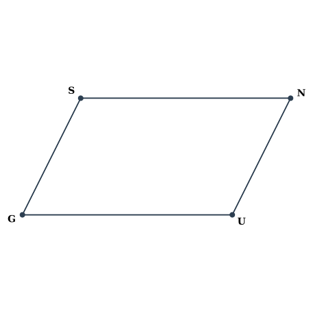
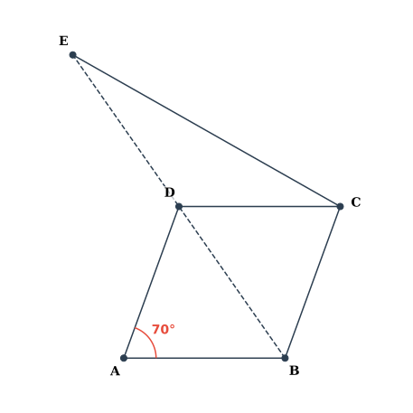
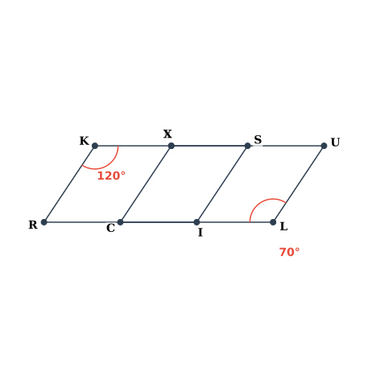

CISCE (ICSE) CLASS 8 MATHEMATICS – GEOMETRY
Time: 2½ Hours
Max Marks: 80
GENERAL INSTRUCTIONS:
- Answer all questions.
- All construction work must be clearly shown with compass markings.
- Figures in brackets indicate marks allotted to each question.
- Mathematical tables or calculators are not permitted.
SECTION I (10 Marks)
(Multiple Choice Questions – Select the correct option)
1. The number of sides of a regular polygon in which each interior angle exceeds each exterior angle by 132° is:
2. In a parallelogram ABCD, if ∠A = 70°, then the measure of ∠B is:
3. Which set of data does NOT guarantee a unique construction of quadrilateral ABCD?
4. In rhombus PQRS, diagonal PR subtends an angle of 50° at side PS. The angle between the diagonals is:
5. How many diagonals does a regular hexagon have?
6. A quadrilateral has three acute angles each measuring 75°. Find the fourth angle.
7. Find the number of sides of a regular polygon when each angle measures 160°.
8. In rectangle ABCD, diagonals AC and BD intersect at O. If ∠OAB = 35°, then ∠BOC equals:
9. Which condition is both necessary and sufficient to prove that a parallelogram is a square?
10. The exterior angles of a polygon are in the ratio 1:2:3:4:5:6. The largest interior angle measures:
SECTION II (30 Marks)
Part A (12 Marks) - Short Answer Questions
11. The interior angle of a regular polygon is eight times the exterior angle. Determine the number of sides and the total number of diagonals.
[2]
12. Construct quadrilateral ABCD where AB = 5 cm, BC = 6 cm, CD = 4.8 cm, ∠ABC = 75° and ∠BCD = 105°.
[2]
13. In quadrilateral ABCD, the angles are in the ratio ∠A:∠B:∠C:∠D = 2:3:5:6. Calculate the measure of the largest angle.
[2]
14. Find the value of x in the quadrilateral with interior angles 130°, 120°, x, and 50°.
[2]
15. Find the value of x in the quadrilateral with a right angle at A, 60° at B, 70° at C, and x at D.
[2]
16. A hexagon has four right angles and two equal obtuse angles. Calculate the measure of each obtuse angle.
[2]
Part B (18 Marks) - Medium Answer Questions
17. In parallelogram GUNS, find the values of x and y if GS = 3x, SN = 26, NU = 18 and GU = 3y - 1. (Note: Opposite sides are GS and UN, and SN and GU).

[3]
Figure for Q17
18. Construct a kite ABCD in which AB = 4 cm, BC = 4.9 cm and AC = 7.2 cm.
[3]
19. In the given figure (not drawn to scale), ABCD is a rhombus with ∠BAD = 70°. Diagonal BD is produced to E such that BD = DE. Join CE.
(a) Find ∠DBC.
(b) Prove that ΔBCE is isosceles.
(c) Calculate ∠BCE.

[3]
Figure for Q19
20. Each interior angle of a polygon is 140° greater than each exterior angle. Find:
(a) The number of sides of the polygon.
(b) The number of diagonals from one vertex.
(c) The total number of diagonals.
[3]
21. The bisectors of ∠A and ∠B meet at point P. If ∠C = 100° and ∠D = 50°, find ∠APB.
 [3]
[3]
Figure for Q21
22. The diagonals of a rhombus are 12 cm and 16 cm. Find the length of each side of the rhombus.
[3]
SECTION III (40 Marks)
(Long Answer Questions)
23.
(a) Construct quadrilateral ABCD with the following data: [4]
AB = 4.8 cm, BC = 5.4 cm, CD = 6 cm, ∠ABC = 80°, ∠BCD = 100°.
Draw diagonal AC and measure its length.
AB = 4.8 cm, BC = 5.4 cm, CD = 6 cm, ∠ABC = 80°, ∠BCD = 100°.
Draw diagonal AC and measure its length.
(b) ABCD is a rhombus. If ∠ACB = 40°, find the measure of ∠ADB. [3]
(c) The sum of the interior angles of a regular polygon is three times the sum of its exterior angles. Determine the number of sides and the measure of each interior angle of this polygon. [3]
24.
(a) In the figure below (not shown to scale), ABCD and ABEF are parallelograms on the same base AB but on opposite sides. The line DE intersects AB at P and BC at Q. Given that ∠DAB = 60° and diagonal AC makes an angle of 40° with AB, calculate: [5]
(i) ∠APD
(ii) ∠CQB
(iii) All angles of quadrilateral CEPQ, where E is the vertex of parallelogram ABEF opposite to B.

(i) ∠APD
(ii) ∠CQB
(iii) All angles of quadrilateral CEPQ, where E is the vertex of parallelogram ABEF opposite to B.
Figure for Q24(a)
(b) Two regular polygons have their number of sides in the ratio 1:2. The ratio of their interior angles is 3:4. Find the number of sides of each polygon and justify your solution with the polygon angle-sum formula. [5]
25.
(a) Construct a rhombus ABCD in which diagonal AC = 10 cm and side AB = 6 cm. Measure and record the length of diagonal BD. [5]
(b) ABCD is a rhombus with diagonals intersecting at O. If AB = 10 cm, BD = 16 cm, find AC. [2]
(c) Find the diagonal of a rectangle with sides 12 cm and 5 cm. [3]
26.
(a) Identify all quadrilaterals that have: [4]
(i) Four sides of equal length,
(ii) Four right angles.
(i) Four sides of equal length,
(ii) Four right angles.
(b) RISK and CLUE are parallelograms. If ∠K = 120° and ∠L = 70°, find measure of x (angle at intersection). [3]

Figure for Q26(b)
(c) (i) Determine the number of sides of a regular polygon whose exterior and interior angles are in the ratio 1 : 5. (ii) Calculate the total number of diagonals in a regular polygon with 15 sides. [3]
END OF QUESTION PAPER